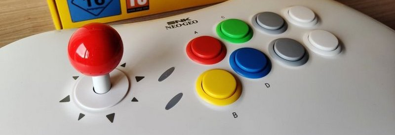

Button layout

This button layout used for The King of Fighters series has significantly influenced the fighting game
genre.
This is how most players experience Breakers Revenge, especially in arcade cabinets, offering an intuitive and responsive control scheme.
Throw
Throws beat meaty normals, and some characters have extra throw inputs or air throws. Throwing is also an effective way to utilize the break mechanic by punishing specific jump attacks and combos.
Supers
Typical of many fighting games, a super move is a powerful attack that requires a special input and can inflict significant damage. In Breakers Revenge, you can build meter by performing normal and special moves, dashes, or taunts, as well as by taking hits or blocking attacks.
Tech rolling
Tech roll give you more options to escape from your opponent's pressure after a knockdown. It only works after after a non-super hit. Tech rolls can also be delayed.
Dashes
All characters, except for Condor, can perform dashes. Some characters have invincibility frames during their backdashes, allowing them to evade attacks while moving backward. Additionally, certain characters can cancel their dashes, enabling quick adjustments in distance or to initiate jumps.
Dizzy
Repeated hits can cause dizziness, but mashing directions and buttons skips it, triggering immediate recovery with brief invincibility frames.
Chip damage
Chip damage happens during block and can secure a win when the opponent's health is low. Super moves deal little chip damage, special moves are more effective for finishing off an opponent.
Breakers
A Breaker is a defensive tool that lets you escape specific combos. It can be triggered by specials, normals, backdashes, throws, or supers.
Master unbreakable combos for guaranteed damage and identify your opponent’s breakable combos. Use it for mind games, like baiting defenders into reversals.
Risk system
The Risk System increases the damage of your next attack over time only when you're not attacking or defending.
Damage caps vary by character. After about 30s in-game, the next hit can deal double damage. The round winner has reduced damage resistance in the next round, while the loser receives a slight defense boost.
When players have significantly different health, the one with less health is immune to damage modification until their health levels are similar.